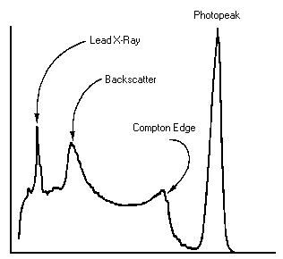

Gamma-fotoner kan förlora energi i inelastiska kollisioner med (nästan) fria elektroner. Betrakta fotoner med en energi på 662 keV. Gör en graf av elektronernas kinetiska energi efter kollisionen som funktion av spridningsvinkel (0 < θ < 180°). Rita i samma figur en graf av fotonens energi efter kollisionen. Bifog en skiss som klart visar vad spridningsvinkeln är.
Vi har två typer av detektorer för gammaspektroskopi:
Båda typer ger en elektrisk puls när en gammafoton detekteras. Till skillnad med t ex ett GM-rör anger i dessa instrument pulsens höjd hur stor den detekterade energin är. Det finns olika sätt att sortera dessa pulser i stapeldiagram för att generera energispektrum. Vi har följande gränssnitt:
Scintillationsdetektorerna S-1212-I av Teledyne innehåller som scintillator en 3″x3″ kristall av natriumjodid. På grund av jods stora atomnummer absorberar NaI gammastrålning effektivt. Absorption ger uppgov till snabba Compton- och fotoelektroner, vars energi snabbt minskar genom excitation i materialet. Det uppstår elektron-hål-par, som kan rekombinera vid dopningcentra (tallium) under utsändning av ljus. Saltet är transparant, och ett mörkeradapterat öga skulle kunna se små blixter (scintillationer) i materialet.
Det totala antalet synliga fotoner (blixtens ljusstyrka) är ungefär proportionellt mot gamma-fotonens energi. Ljusstyrkan mäts genom fotoemission i ett vakuumrör där antalet elektroner multipliceras, Detta är en PMT, photomultiplier tube.
För varje gammakvant ger detektorn en elektrisk puls vars höjd är proportionell mot gammafotonens energi. Pulserna sorteras på höjd av olika kombinationer av analog och digital elektronik. På datorn kan man då se en graf av gammafotonernas energifördelning.
|  | Även om kärnans gammastrålning är monokromatisk, blir det en fördelning i instrumentet. Fototoppen produceras när gammakvantens energi helt omvandlas till en elektrons kinetiska energi genom fotoelektrisk effekt. Det blir en viss bredd i fördelningen (i scintillationsdetektorer typ 5 eller 10 %) på grund av att en slumpvis del av fotonerna detekteras av fotomultiplikatorröret. Men en del av gammafotonerna sprids genom comptonspridning. Om gammakvanten sedan lämnar detektorkristallen, mäter detektorn en lägre energi. Det ger upphov till ett comptonkontinuum av elektronenergier. Elektronen får maximal energi när gammakvanten sprids genom 180°. I spektrum ger det upphov till comptonkanten. |
Ofta (även hos oss) står detektorn i en blyskärmning. Det finns gammafotoner som fotoexciterar bly 1s-elektroner. Röntgenfluorescens ger då upphov till en Pb Kα topp i detektorn. Gammakvanter kan också comptonspridas av omgivningen, och de som kommer tillbaka till detektorn har spridits genom ungefär 180° och ger upphov till en backscattering peak.
Det finns andra typer av gammaspektrometrar. Vi har också en CdTe-detektor med en upplösning på 1%. Detektionsprincipen liknar den av ytbarriärdetektorn - alla elektron-hålpar mäts helt elektroniskt. Nackdelen är att känsligheten är mycket lägre på grund av kadmiumtelluriddiodens lilla volym. Vid energier över 100 keV blir chansen att fotoner går rakt igenom allt större.
Riktigt bra upplösning och känslighet har kväve-kylda germaniumdetektorer.
Hur höga pulserna är beror inte bara på gamma-energin utan även på förstärkningsfaktorn. För fotomultiplikatorröret är den en funktion av högspänningen på dynoderna. I den här laborationen ska mätsystemet ha ett fönster för gamma-energier som går upp till ungefär 3 MeV. Med Cs-137 kan man kolla om dess fototopp ligger mellan kanal 220 och 250. Om inte ska högspänningen justeras. För detaljer, se separata instruktioner.
Den radioaktiva källan som används för kalibrering är 152Eu som har ett komplicerat sönderfallsschema. Spektrumet har fototoppar vid 122, 245, 344, 779, 964, 1086+1112 och 1408 keV. (Jämför Eu-152 spektrum tagen med CdTe-detektor.)
CdTe-detektorn kom med mjukvara som tillåter kalibrering med fler än två toppar.
Efter energikalibrering kan man nu göra ett urval ur följande experiment. Ta åtminstone experimenten radondöttrar och comptonspridning.
 |
Ta nu spektra av några radioaktiva preparat. Bestäm fototopparnas centroider i MeV, och jämför med litteraturvärden. Bestäm var radioaktiviteten i den "okända" källan kommar ifrån. Na-22 är en positronemitter, och förutom kärnövergången vid 1,275 MeV ser man 511-keV-fotoner från positronernas annihilering. Varför ser man inte en topp vid summan av 1,275 MeV och 0,511 MeV men ingen topp vid 1,022 MeV för båda fotoner från par-annihilering? |
Båda 39K (93 %) och 41K (7 %) är stabila med jämna antal neutroner, men 40K (0,0117 %) är inte helt stabilt. Vid 11 % av alla sönderfall fångar kärnan in en elektron från K-skalet, och förvandlas därmed till ett exciterat tillstånd av Ar-40, som relaxerar genom gamma-emission.

Man kan mäta gammastrålning från konstgödsel, Seltin, havssalt, stenar, osv.
En tunn metalltråd är uppspänd mellan två isolatorer. Tråden är några meter lång. På tråden ligger en högspänning på 5-10 kV med minus polaritet. Uppställningen står i minst en halv timme i oventilerat rum. Stäng av spänningen, jorda tråden. Torka av den noga, runt om och längs hela längden med en pappersservett.
Eller använd suglåda (av Alega). Anslut den på en dammsugare, lägg filtrerpapper på öppningarna, och låt dammsugaren gå i en halv timme. Under tiden kan man mäta ett bakgrundsspektrum.
För att mäta aktiviteten som funktion av tid finns MCS-mod (multi-channel scaling).
Lägg pappret med radondöttrarna så snabbt som möjligt efter insamlingen på scintillatordetektorn. Mät radioaktiviteten i en serie av spektra.
Analysera. Subtrahera bakgrunden från mätserien. Mät topparnas areor och plotta dem som funktion av tid. Försök bestämma halveringstiderna. Vilka nuklider ser du?
Kemiskt isolerade grundämnen kan ha komplicerade spektrum. De innehåller fortfarande olika isotoper, och den mest sällsynta isotopen kan ha högst aktivitet (t ex U-234). Dessutom finns det gammastrålning från sönderfallsprodukter. Försök ge beteckningar åt de synliga topparna, och redogör för dina resonemang. Det finns provar av radium (i en klocka), torium i en gasstrumpa och uran (i vaselinglas eller som uranylnitrat).
Spektra från uranmalm osv innehåller ännu fler toppar, eftersom alla uranisotoper är i jämnvikt med sina hela sönderfallsserier.
Man kan titta på alunskiffer mm (blåbetong, rödfyr?). Försök identifiera de starkaste gammatopparna.
Man använder europiumpreparat med känd aktivitet. Följ instruktionerna i manualen.
Med en effektivitetskalibrering blir det möjligt att bestämma aktiviteten av okända prov: älgkött, ren och svamp (Tjernobyl), vatten, radonfilter, aska, stenar, blåbetong.
{kind=link}
{kind=link}